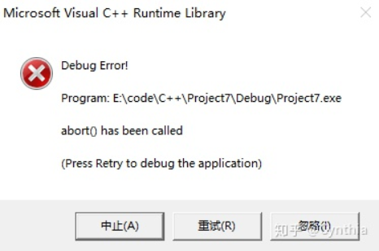

==非原创，充当缝合怪而已==
在Windows中通过CreateThread()创建进程，而在linux中使用POSIX thread模型，pthread_create()创建线程，并且在编译是要加入-pthread选项来表示正在使用POSIX thread库。可见，不同操作系统有着相似的线程概念，却包含这很多不同的实现细节。因此想要进行跨平台的多线程开发，就需要一种线程库作为thread wrapper。
Boost thread就是这样一种线程库，并且被加入到C++11标准中。在C++11以前，C++的多线程编程均需依赖系统或第三方接口实现，一定程度上影响了代码的移植性。C++11中，引入了boost库中的多线程部分内容，形成C++标准，形成标准后的boost多线程编程部分接口基本没有变化，这样方便了以前使用boost接口开发的使用者切换使用C++标准接口，很容易把boost接口升级为C++标准接口。
std::thread线程创建 创建线程时，传入的可调用对象有多样化：
可调用对象可以是lambda表达式，std::function，也可以是重载了调用运算符的类，或者是成员函数或普通函数
#include <iostream> #include <thread> void threadfunc () "sample func" << std::endl;int main () std::thread t1 (threadfunc) ;std::thread t2 ([](){ std::cout << "lambda func" << std::endl; }) join ();join ();return 0 ;
可以在线程的构造函数中传入可调用对象的参数，此时线程构造函数的第一个参数为可调用对象，此后的参数为可调用对象的参数：
#include <iostream> #include <thread> class TestThread {public :void operator () (int id) "receive a id: " << id << std::endl;int main () std::thread t1 (TestThread{}, 0 ) ;join ();return 0 ;
如果传入的可调用对象是某个类的成员函数，则线程构造函数的第一个参数为该类型的成员函数指针，第二个参数为指向该类型的实例的指针，其后为成员函数的参数：
#include <iostream> #include <thread> class TestThread {public :void sample (int id) "receive a id: " << id << std::endl;int main () std::thread t1 (&TestThread::sample, &obj, 0 ) ;join ();return 0 ;
在向线程中传递参数时需要注意的一点是：默认情况下会将传递的参数拷贝到线程的独立内存中，即使传入参数的类型为引用，但是可以使用std::ref将参数传递的方式更改为引用。
#include <iostream> #include <thread> int main () int real_id = 1 ;std::thread t1 ([](int &id){ std::cout << "lambda func" << std::endl; }, std::ref(real_id)) join ();return 0 ;
阻塞线程 & 分离线程 在C++11之前，C++语言层面是不支持多线程的，想利用C++实现并发程序，借助操作系统的API实现跨平台的并发程序存在着诸多不便，当C++11在语言层面支持多线程后，编写跨平台的多线程代码就方便了许多。
C++11提供的std::thread在开发多线程方面带来了便捷。
#include <iostream> #include <thread> void threadfunc () "thread func" << std::endl;int main () std::thread t1 (threadfunc) ;join (); return 0 ;
首先定义线程对象t1，线程函数threadfunc运行在线程对象t1中，当线程创建成功并执行线程函数后，一定要保证线程函数运行结束才能退出，这里调用了join()函数阻塞线程，直到threadfunc()运行结束，回收对应创建线程的资源。如果不阻塞线程，就不能保证线程对象t1在threadfunc()运行期间有效，下面不调用join()阻塞线程。
#include <iostream> #include <thread> void threadfunc () "thread func" << std::endl;int main () std::thread t1 (threadfunc) ;return 0 ;
在运行时引起了程序崩溃。

除了调用join()阻塞线程，保证线程对象在线程函数运行期间的有效性，还可以通过线程分离的手段实现，调用detach()函数使得线程对象与线程函数分离，这样，在线程函数运行期间，线程对象与线程函数就没有联系了，此时的线程是作为后台线程去执行，detach()后就无法再和线程发生联系，也不能通过join()来等待线程执行完毕，线程何时执行完无法控制，它的资源会被init进程回收，所以，通常不采用detach()方法。
#include <iostream> #include <thread> void threadfunc () " detach thread func" << std::endl;int main () std::thread t1 (threadfunc) ;detach (); return 0 ;
这里调用detach()实现线程分离，但是运行后，主线程退出的时候threadfunc()还没有输出“detach thread func”，threadfunc()什么时候运行结束也无法确定，为了看到所创建的线程运行结果，在主线程等待一下再退出。
#include <iostream> #include <thread> #include <chrono> void threadfunc () "detach thread func" << std::endl;int main () std::thread t1 (threadfunc) ;detach ();while (true )sleep_for (std::chrono::milliseconds (1000 ));break ;return 0 ;
此时运行结果：
使用detach时一定要注意，如果被调用detach的线程使用了调用detach线程的局部变量，那么在局部变量生命周期结束后，若被调用detach的线程还试图访问该局部变量时，就会出现错误：
#include <iostream> #include <thread> int main () size_t length = 10 ;int *value = new int [length];for (size_t i = 0 ; i < length; i++)std::thread worker ([&]() { using namespace std::chrono_literals; std::this_thread::sleep_for(5 s); for (size_t i = 0 ; i < length; i++) { std::cout << value[i] << std::endl; } }) detach ();delete [] value;"test exit" << std::endl;return 0 ;
对于一个std::thread对象，只能对其调用一次join或者detach，被调用join后就无法再次调用join或者detach，同样被调用detach后也无法再次被调用join或者detach。
可以使用std::thread的joinable方法判断std::thread对象是否时可以被join的，对一个std::thread对象在如下几种情况下joinable方法会返回false：
空线程(在构造没有附加任何运行任务)
已经被调用join方法的线程
已经被调用detach方法的线程
已经被move的线程
detach：由C++ Runtime 进行托管
join：由当前线程进行负责空间回收等事务
无论是detach还是join操作都将使得joinable()都返回false
线程移动 通过std::thread创建的线程是不可以复制的，但是可以移动，转移线程的所有权。
#include <iostream> #include <thread> #include <chrono> void threadfunc () "move thread func" << std::endl; int main () std::thread t1 (threadfunc) ;std::thread t2 (std::move(t1)) ;join ();while (true )sleep_for (std::chrono::milliseconds (1000 ));break ;return 0 ;
输出结果：
移动后t1就不代表任何线程了，t2对象代表着线程threadfunc()。另外，还可以通过std::bind来创建线程函数。
#include <iostream> #include <thread> #include <chrono> #include <functional> class A {public :void threadfunc () {"bind thread func" << std::endl;int main () std::thread t1 (std::bind(&A::threadfunc,&a)) ;join ();while (true )sleep_for (std::chrono::milliseconds (1000 ));break ;return 0 ;
创建一个类A，然后再main函数中将类A中的成员函数绑定到线程对象t1上，运行结果：
获取线程id 标准库中出了std::thread和id定义外，还有定义了一个std::this_thread命名空间：
namespace this_thead {thread::id get_id () ;void yield () template <class Clock, class Duration> void sleep_until (const chrono::time_point<Clock, Duration>& abs_time) ;template <class Rep, class Period> void sleep_for (const chromo::duration<Rep, Period>& rel_time) ;
通过getid方法可以获得当前线程的id，而yield，sleep_until和sleep_for方法则可以用于线程的调度。
调用yield方法会使操作系统重新调度当前线程，并允许其他线程运行一段时间。yield函数的准确行为依赖于具体实现，特别是使用中的 OS 调度器机制和系统状态。例如，先进先出实时调度器（ Linux 的SCHED_FIFO）将悬挂当前线程并将它放到准备运行的同优先级线程的队列尾（而若无其他线程在同优先级，则yield无效果） 。
每个线程都有自己的线程标识，也就是线程ID，当线程创建成功后，可以通过get_id()来获取线程的ID。
#include <iostream> #include <thread> #include <chrono> #include <functional> class A {public :void threadfunc () {"bind thread func" << std::endl;int main () std::thread t1 (std::bind(&A::threadfunc,&a)) ;"main thread ID is : " << std::this_thread::get_id () << std::endl;"t1 thread ID is : " << t1.get_id () << std::endl;join ();while (true )sleep_for (std::chrono::milliseconds (1000 ));break ;return 0 ;
std::this_thread::get_id()获取的是当前线程的ID，t1.get_id()获取的是所创建的t1对象中运行的线程ID，对应的ID分别为：
main thread ID is : 11932 12076
虽然get_id()可以获取线程的ID，但是其返回类型是thread::id，通过std::cout可以输出线程ID，但是这样使用似乎不太方面，要是能转换为整形就好了。其实可以将得到的线程ID写入到ostreamstring流中，转换成string类型，再转换成整形。
#include <iostream> #include <thread> #include <chrono> #include <functional> #include <sstream> class A {public :void threadfunc () {"bind thread func" << std::endl;int main () std::thread t1 (std::bind(&A::threadfunc, &a)) ;get_id () << std::endl;str (); int threadID = atoi (strID.c_str ()); "t1 thread ID is : " << threadID << std::endl;join ();while (true )sleep_for (std::chrono::milliseconds (1000 ));break ;return 0 ;
输出结果：
t1 thread ID is : 6956
sleep_for则是将当前线程阻塞一定时间段后唤醒，而sleep_until则是阻塞当前线程直至某一时间点后将当前线程唤醒：
void test () std::thread thread_a ([]() { using namespace std::chrono_literals; std::this_thread::sleep_for(2 s); }) using namespace std::chrono_literals;auto time_point = std::chrono::steady_clock::now () + 10 s;std::thread thread_b ([=]() { std::this_thread::sleep_until(time_point); }) join ();join ();
std::mutex锁机制简介 进入多线程编程的世界，除了要牢牢掌握std::thread使用方法，还要掌握互斥量（锁）的使用，这是一种线程同步机制，在C++11中提供了4中互斥量。
std::mutex;
C++标准库中提供的互斥量一般都有定义lock，unlock，trylock三个方法。这里以std::mutex为例做说明。
使用std::mutex的lock方法可以在调用lock的线程上锁住互斥量，若互斥量已被其他线程上锁，则当前调用lock的线程将被阻塞，直其他占有互斥量的线程解锁互斥量使得当前线程获得互斥量。对std::mutex来说，在已经占有互斥量的线程上调用lock方法是未定义行为。
std::mutex的unlock方法可以解锁当前线程占有的互斥量，若在未占有互斥量的线程上调用unlock则为未定义行为。
std::mutex的trylock方法可以尝试锁定互斥量，若成功锁定互斥量则返回true，否则返回false。在已经占有互斥量的线程上调用trylock为未定义行为。在互斥量未被任何线程锁定的情况下，此函数也可能会返回false。
在调用std::mutex的lock方法锁定互斥量后一定要记得在不需要占有互斥量的时候调用unlock解锁互斥量，否则其他任何想要获取锁的线程都会被阻塞，此时多线程就可能会退化成为单线程。占有 std::mutex的线程在std::mutex对象销毁前未调用其unlock方法则为未定义行为，且std::mutex对象不可复制也不可移动。
锁的使用 从各种互斥量的名字可以看出其具有的特性，在实际开发中，常用就是std::mutex，它就像是一把锁，我们需要做的就是对它进行加锁与解锁。
#include <iostream> #include <thread> #include <mutex> #include <chrono> void func () "entry func test thread ID is : " << std::this_thread::get_id () << std::endl;sleep_for (std::chrono::microseconds (1000 ));"leave func test thread ID is : " << std::this_thread::get_id () << std::endl;int main () std::thread t1 (func) ;std::thread t2 (func) ;std::thread t3 (func) ;std::thread t4 (func) ;std::thread t5 (func) ;join ();join ();join ();join ();join ();return 0 ;
创建了5个线程，然后分别调用func()函数，得到结果：
entry func test thread ID is : entry func test thread ID is : 19180 3596 13632 9520 4460 13632 19180 9520 3596 4460
可以看出，并没有按顺序去执行线程函数，后面创建的线程并没有等待前面的线程执行完毕，导致结果混乱，下面用std::mutex进行控制：
#include <iostream> #include <thread> #include <mutex> #include <chrono> void func () lock ();"entry func test thread ID is : " << std::this_thread::get_id () << std::endl;sleep_for (std::chrono::microseconds (1000 ));"leave func test thread ID is : " << std::this_thread::get_id () << std::endl;unlock ();int main () std::thread t1 (func) ;std::thread t2 (func) ;std::thread t3 (func) ;std::thread t4 (func) ;std::thread t5 (func) ;join ();join ();join ();join ();join ();return 0 ;
只要线程进入func()函数就进行加锁处理，当线程执行完毕后进行解锁，保证每个线程都能按顺序执行，输出结果：
entry func test thread ID is : 8852 8852 15464 15464 17600 17600 16084 16084 4156 4156
虽然通过lock()与unlock()可以解决线程之间的资源竞争问题，但是这里也存在不足。
func ()int main ()
func()中再执行逻辑处理中程序因为某些原因退出了，此时就无法unlock()了，这样其他线程也就无法获取std::mutex，造成死锁现象，其实在加锁之前可以通过trylock()尝试一下能不能加锁。实际开发中，通常也不会这样写代码，而是采用lock_guard来控制std::mutex。
template <class _Mutex >class lock_guard {public :using mutex_type = _Mutex;explicit lock_guard (_Mutex& _Mtx) : _MyMutex(_Mtx) { lock (); lock_guard (_Mutex& _Mtx, adopt_lock_t ) : _MyMutex(_Mtx)lock_guard () noexcept unlock (); lock_guard (const lock_guard&) = delete ;operator =(const lock_guard&) = delete ;private :
lock_guard是类模板，在其构造函数中自动给std::mutex加锁，在退出作用域的时候自动解锁，这样就可以保证std::mutex的正确操作，这也是RAII（获取资源便初始化） 技术的体现。
#include <iostream> #include <thread> #include <mutex> #include <chrono> void func () std::lock_guard<std::mutex> lock (g_mutex) ; "entry func test thread ID is : " << std::this_thread::get_id () << std::endl;sleep_for (std::chrono::microseconds (1000 ));"leave func test thread ID is : " << std::this_thread::get_id () << std::endl;int main () std::thread t1 (func) ;std::thread t2 (func) ;std::thread t3 (func) ;std::thread t4 (func) ;std::thread t5 (func) ;join ();join ();join ();join ();join ();return 0 ;
运行结果：
entry func test thread ID is : 19164 19164 15124 15124 2816 2816 17584 17584 15792 15792
std提供的锁工具 std::lock_guard是标准库提供的基于RAII的锁管理工具。std::lock_guard类提供了两种构造函数：
在std::lock_guard类的对象在构造时接受一个互斥量作为参数，并对该互斥量进行上锁操作。
在std::lock_guard类的对象在构造时接受一个互斥量和std::adopt_lock作为参数，互斥的获取互斥量的所有权，但并不对互斥量进行上锁。
在std::lock_guard类对象析构时回对其占有的互斥量解锁，除析构和构造函数外std::lock_guard没有定义其他任何方法。
std::unique_lock则RAII式锁管理的基础上提供了更多的灵活性。std::unique_lock提供的lock，unlock，trylock方法与其所管理的互斥量提供的lock，unlock，trylock行为相同。std::unique_lock还提供了移动构造和移动赋值操作(支持移动操作意味着我们可以在函数和容器中转移std::unique_lock的所有权)，std::unique_lock的移动构造函数会以参数的内容初始化当前对象，并解除参数与其所管理的互斥量之前的关系。在调用std::unique_lock的移动赋值函数时，若当前对象有互斥量与其关联且已对其上锁，则对互斥量解锁并解除关联，随后获取参数所管理的互斥量，并解除参数锁管理的互斥量与参数间的关系。
std::unique_lock的构造函数同std::lock_guard的构造函数一样也提供了初始化策略：
在std::unique_lock类的对象在构造时接受一个互斥量作为参数，并对该互斥量进行上锁操作。
在std::unique_lock类的对象在构造时接受一个互斥量和std::defer_lock作为参数，则不对该互斥量进行上锁。
在std::unique_lock类的对象在构造时接受一个互斥量和std::try_to_lock作为参数，则尝试对互斥量上锁，上锁失败时不会阻塞线程。
在std::unique_lock类的对象在构造时接受一个互斥量和std::adopt_lock作为参数，则假定当前线程已经拥有互斥量的所有权。
std::unique_lock的owns_lock方法可以检查std::unique_lock是否有互斥量与其关联，且是否已对互斥量上锁，若有互斥量与std::unique_lock对象关联，且已经被std::unique_lock对象获得所有权则返回true，否则返回false。
下面是std::lock_guard与std::unique_lock的简单使用示例：
void test () "Jonathan Joestar" , 21 , 0 };std::thread thread_a ([&]() { using namespace std::chrono_literals; std::this_thread::sleep_for(10 ns); std::lock_guard lg(mutex); person.m_name = "Dio Brando" ; person.m_age = 121 ; person.m_gender = 0 ; }) std::thread thread_b ([&]() { using namespace std::chrono_literals; std::this_thread::sleep_for(10 ns); std::lock_guard lg(mutex); std::cout << person.m_name << ", " << person.m_age << ", " << person.m_gender; }) join ();join ();
标准库提供的std::lock函数可以配合std::unique_lock或std::lock_guard来避免死锁。
在C++17中提供了基于RAII的更便于使用的std::scopedlock类也可以用于避免死锁。
struct Datum { Datum (const std::string name) : m_name (name) {}void swap_data (Datum &lhs, Datum &rhs) using namespace std::chrono_literals;sleep_for (10 ns);lock (lhs.m_mutex, rhs.m_mutex);std::lock_guard lg0 (lhs.m_mutex, std::adopt_lock) ;std::lock_guard lg1 (rhs.m_mutex, std::adopt_lock) ;void test () Datum leon ("Leon" ) , claire ("Claire" ) , ada ("Ada" ) , sherry ("Sherry" ) ;emplace_back (swap_data, std::ref (leon), std::ref (ada));emplace_back (swap_data, std::ref (claire), std::ref (ada));emplace_back (swap_data, std::ref (leon), std::ref (sherry));emplace_back (swap_data, std::ref (sherry), std::ref (claire));emplace_back (swap_data, std::ref (sherry), std::ref (ada));emplace_back (swap_data, std::ref (claire), std::ref (leon));for (auto &t : workers)join ();"Leon's current name is :" << leon.m_name << std::endl;"Claire's current name is :" << claire.m_name << std::endl;"Ada's current name is :" << ada.m_name << std::endl;"Sherry's current name is :" << sherry.m_name << std::endl;
上面代码的可能输出为：
Leon' s current name is :Sherry' s current name is :Claire' s current name is :Leon' s current name is :Ada
std::condition_variable条件变量是C++11提供的另外一种线程同步机制，通过判断条件是否满足，决定是否阻塞线程，当线程执行条件满足的时候就会唤醒阻塞的线程，常与std::mutex配合使用，C++11提供了两种条件变量。
std::condition_variable，配合std::unique_lock<std::mutex>使用，通过wait()函数阻塞线程；
std::condition_variable_any，可以和任意带有lock()、unlock()语义的std::mutex搭配使用，比较灵活，但是其效率不及std::condition_variable；
std::unique_lock：C++11提供的 std::unique_lock 是通用互斥包装器，允许延迟锁定、锁定的有时限尝试、递归锁定、所有权转移和与条件变量一同使用。std::unique_lock比std::lock_guard使用更加灵活，功能更加强大。使用std::unique_lock需要付出更多的时间、性能成本。
下面利用std::mutex与std::condition_variable实现生产者与消费者模式。
#include <iostream> #include <condition_variable> #include <thread> #include <list> #include <mutex> #include <chrono> class CTask {public :CTask (int taskID)this ->taskId = taskID;void dotask () {"consumer a task Id is " << taskId << std::endl;private :int taskId;void ProdecerFunc () int n_taskId = 0 ;nullptr ;while (true )std::lock_guard<std::mutex> lock (g_mutex) ;push_back (ptask);"produce a task Id is " << n_taskId << std::endl;notify_one ();sleep_for (std::chrono::milliseconds (1000 ));void ConsumerFunc () nullptr ; while (true )std::unique_lock<std::mutex> lock (g_mutex) ;while (g_task.empty ()) wait (lock);front (); pop_front ();if (ptask == nullptr )continue ;dotask (); int main () std::thread t1 (ConsumerFunc) ;std::thread t2 (ConsumerFunc) ;std::thread t3 (ConsumerFunc) ;std::thread t4 (ProdecerFunc) ;join ();join ();join ();join ();return 0 ;
创建3个消费者线程，一个生产者线程，当存放任务的std::list为空时，消费者线程阻塞，当生产者线程生产一个任务放入std::list中时候，此时满足条件，条件变量就可以唤醒阻塞的线程去执行任务。
produce a task Id is 0 0 1 1 2 2 3 3 4 4 5 5 6 6 7 7
条件变量的使用过程可以归纳如下：
拥有条件变量的线消费者程获取互斥锁；
消费者线程循环检查条件是否满足，不满足则阻塞等待，此时释放互斥锁；
当生产者线程产生任务后，调用notify_one()或者notify_all()唤醒阻塞的消费者线程；
当消费者线程被唤醒后再次获得互斥锁去执行任务；
thread_local C++11中提供了thread_local，thread_local定义的变量在每个线程都保存一份副本，而且互不干扰，在线程退出的时候自动销毁。
#include <iostream> #include <thread> #include <chrono> thread_local int g_k = 0 ;void func1 () while (true )void func2 () while (true )"func2 thread ID is : " << std::this_thread::get_id () << std::endl;"func2 g_k = " << g_k << std::endl;sleep_for (std::chrono::milliseconds (1000 ));int main () std::thread t1 (func1) ;std::thread t2 (func2) ;join ();join ();return 0 ;
在func1()对g_k循环加1操作，在func2()每个1000毫秒输出一次g_k的值：
func2 thread ID is : 15312 0 15312 0 15312 0 15312 0 15312 0 15312 0 15312 0 15312 0 15312 0 15312 0
可以看出func2()中的g_k始终保持不变。
std::atomic std::atomic为C++11封装的原子数据类型。 什么是原子数据类型？从功能上看，简单地说，原子数据类型不会发生数据竞争，能直接用在多线程中而不必我们用户对其进行添加互斥资源锁的类型。从实现上来看，我们可以理解为这些原子类型内部自己加了锁。
我们下面通过一个测试例子说明原子类型std::atomic的特点。
我们使用10个线程，把std::atomic类型的变量iCount从10减到1。
#include <thread> #include <atomic> #include <stdio.h> #include <iostream> #include <list> std::atomic<bool > bIsReady (false ) ;std::atomic<int > iCount (10 ) ;void threadfun1 () if (!bIsReady) {yield ();while (iCount > 0 )printf ("iCount:%d\r\n" , iCount--);int main () for (int i = 0 ; i < 10 ; ++i)push_back (std::thread (threadfun1));for (auto & th : lstThread)join ();
运行结果：
iCount:10
从上面的结果可以看到，iCount的最小结果是1，没有出现小于等于0的情况，大家可以把iCount改成100甚至1000看看，可能会更直观一点。
参考文章 C++ 多线程编程 （一）
C++11多线程
c++11&14-多线程专题
C++标准库多线程简介Part1